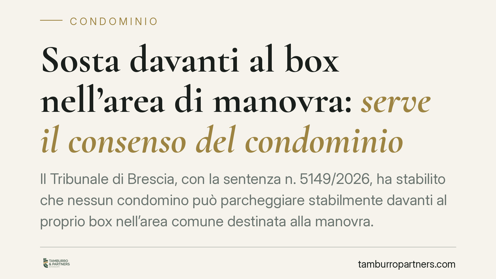

Sosta davanti al box nell'area di manovra: serve il consenso del condominio
Il Tribunale di Brescia, con la sentenza n. 5149/2026, ha stabilito che nessun condomino può parcheggiare stabilmente davanti al proprio box nell'area comune destinata alla manovra. L'uso prolungato negli anni non fa nascere alcun diritto esclusivo: serve il consenso unanime dei condomini. Una pronuncia che incide sulle abitudini quotidiane di molti garage condominiali.

Il caso deciso dal Tribunale di Brescia
Un condomino rivendicava il diritto di sostare con la propria auto nello spazio antistante il box di sua proprietà, collocato all'interno dell'area comune di manovra. A sostegno della pretesa, invocava una consuetudine consolidata da anni: tutti, nel tempo, avevano parcheggiato davanti al proprio garage senza che nessuno sollevasse obiezioni.
Il Tribunale di Brescia, con la sentenza n. 5149/2026, ha respinto la tesi. L'area di manovra è un bene comune, destinato per sua natura al transito e alle operazioni di ingresso e uscita dei veicoli. Occuparla stabilmente con una vettura in sosta significa sottrarla alla funzione condivisa e trasformarla, di fatto, in un parcheggio privato.
Inquadramento normativo
Il riferimento centrale è l'art. 1102 del Codice civile, che disciplina l'uso della cosa comune. La norma consente a ciascun condomino di servirsi del bene comune, ma pone due limiti precisi: non alterarne la destinazione e non impedire agli altri partecipanti di farne pari uso.
Parcheggiare stabilmente davanti al proprio box viola entrambi i limiti. Da un lato, altera la destinazione dell'area, che serve alla manovra e non alla sosta. Dall'altro, restringe lo spazio di manovra a danno degli altri condomini, comprimendo il loro pari uso.
Un punto merita attenzione particolare: la consuetudine pluriennale non fonda alcun diritto. La tolleranza protratta nel tempo — il fatto che nessuno si sia mai opposto — non si traduce in un titolo giuridico. Per riservare a uno o più condomini un uso esclusivo di una porzione di bene comune occorre il consenso unanime, perché si incide sul diritto di proprietà di tutti i partecipanti. Senza quell'unanimità, l'uso resta precario e sempre revocabile.
Implicazioni pratiche
Per il singolo condomino la pronuncia significa che l'abitudine di lasciare l'auto davanti al garage, anche se seguita da decenni, può essere contestata in qualsiasi momento. Non vi è un diritto acquisito da far valere contro l'amministratore o contro gli altri condomini.
La questione tocca anche i locatari: chi affitta un box non acquisisce, con il contratto, alcun diritto a sostare nell'area comune antistante. Il conduttore subentra nella posizione del proprietario e ne eredita gli stessi limiti.
Per il condominio, la sentenza rafforza la possibilità di ottenere la rimozione dei veicoli in sosta abusiva e di disciplinare l'area con una regolamentazione chiara. È un punto rilevante anche per l'amministratore, spesso chiamato a mediare tra chi rivendica l'uso dello spazio e chi ne denuncia l'occupazione.
Resta aperta una strada: se i condomini vogliono consentire la sosta davanti ai box, possono farlo. Ma serve una decisione presa con le maggioranze corrette — o con l'unanimità, quando l'uso attribuito è esclusivo e stabile — e preferibilmente formalizzata nel regolamento condominiale.
Cosa fare in concreto
- Verificate il titolo: controllate se esista una delibera o una clausola del regolamento che autorizzi la sosta nell'area di manovra. In assenza, l'uso è precario.
- Non confidate nella consuetudine: l'abitudine pluriennale non vi protegge da una contestazione futura. Documentate ogni accordo per iscritto.
- Portate la questione in assemblea: se volete regolamentare la sosta, proponete una delibera che definisca modalità, turni o assegnazioni, con le maggioranze appropriate.
- Valutate l'unanimità per usi esclusivi: se l'obiettivo è riservare in modo stabile uno spazio comune a singoli condomini, consigliamo di raccogliere il consenso di tutti i partecipanti.
- Informate i conduttori: se locate un box, chiarite nel contratto che non è compresa la sosta nell'area comune, per evitare contestazioni.
---
*Contributo informativo a cura di Tamburro & Partners - Avv. Giuseppe Tamburro. Non costituisce parere legale.*
Ogni condominio ha una storia a sé.
Se gestisci un'amministrazione e vuoi un confronto su una specifica questione condominiale, scrivi allo studio. Ti rispondiamo entro un giorno lavorativo.